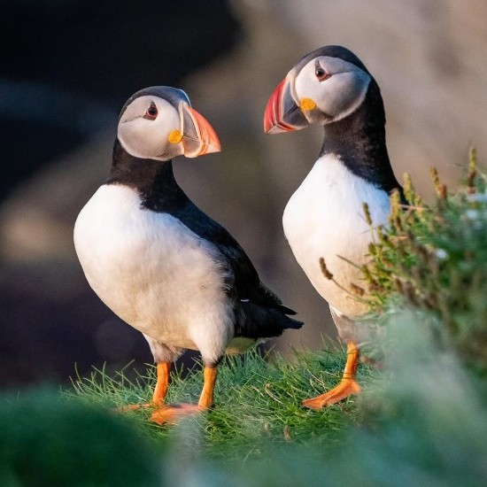

Welcome to Orkney, Scotland!
Nestled in the northern reaches of Scotland, Orkney is a captivating group of islands brimming with
history, natural beauty, and vibrant culture. Whether you're drawn to its ancient Neolithic sites,
stunning coastal landscapes, or the warm hospitality of its residents, Orkney offers a unique and
unforgettable experience. Explore the islands and discover the magic that has enchanted visitors for
centuries.
From the iconic Ring of Brodgar to the bustling town of Kirkwall, Orkney is a place where the past
and present seamlessly blend. Wander through charming villages, marvel at the wildlife, and immerse
yourself in the rich traditions that define these islands. Whether you're here for adventure,
relaxation, or a bit of both, Orkney welcomes you with open arms and endless possibilities.
|
Fun Facts!
-
Orkney is home to Skara Brae, a remarkably
well-preserved Neolithic village that is older than
the pyramids of Egypt.
-
Orkney is a haven for birdwatchers, with over 200 species of birds, including puffins,
guillemots, and the rare hen harrier.
-
Built by Italian prisoners of war during World War II, the Italian chapel is a symbol of hope
and resilience.
-
In 2018, Viking Ocean Cruises rated Kirkwall as the top cruise destination among 46 seaports
in
Northern Europe, based on passenger feedback.
-
Orkney hosts an annual St. Magnus Festival celebrating music, art, and community across the
islands.
|

|